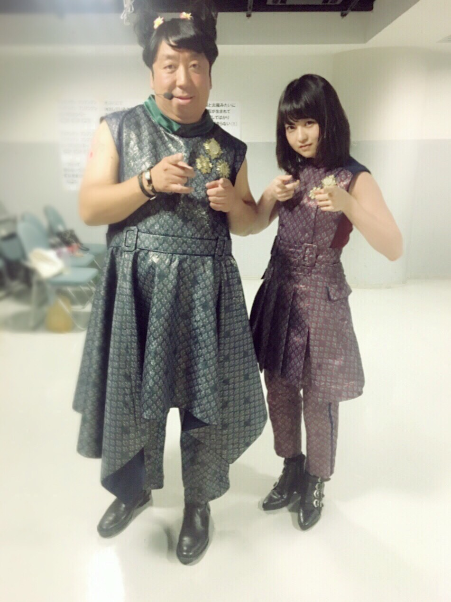
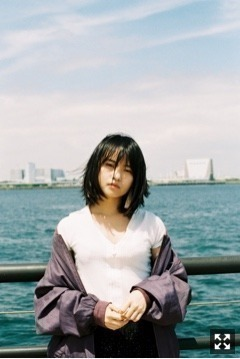
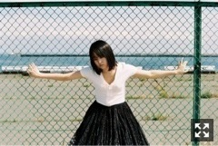
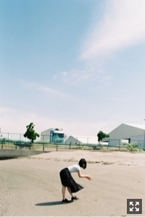
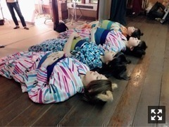

こんばんは、
テレ東音楽祭出演しました。
ヒム子さんとインフルエンサー
コラボしました。

ヒム子さん！！
胸元のワッペン
よく見るとNがバナナマンのBになってて
横顔が日村さんになってた！
素敵じゃ！
......
幕張メッセでの個別握手会、全国握手会
欠席が続きご迷惑をおかけしました。
今年に入ってからしばらくいろんなところで
迷惑かけてばかりで申し訳ないです、
真夏の全国ツアー2017
今年は神宮から始まります。
野外は体力勝負になるので、
エネルギー溜めて元気になって
みなさんに返していきたい。
本当にすみません、
しっかり放出します。
今日発売の
「4th YEAR BIRTHDAY LIVE＠明治神宮野球場」
一足先にいただいて観ました。
神宮球場で3日間全曲披露。
なかなかハードで、
いままででいちばん大変だったライブ。
思い出したらなんか泣けてきて、
泣きながら観てました〜〜
それくらい、それ以上に
達成感がありました。
雨の中水溜りの上で踊るのも楽しかった。
3日間ともバランスよく出演してたかな、
でも個人的には2日目！
今年も、去年と同じくらいにそれ以上に
のびのび生き生き頑張ります。



Thierry Colson
スカート
人工海岸

じゃらん
https://www.jp.playstation.com/blog/detail/5215/20170626-gd2.html?tkgpscom=dc_gd2_fb_20170626
「カンヌライオンズ 2017｣で
『GRAVITY DAZE 2』の｢重力猫｣PVが
"Gold Lion"他7つの賞を受賞！
✨✨✨✨✨✨✨
7つも！ゴールドも！
やなしょー2年連続ゴールド！！なんと！
スタッフの皆様
本当におめでとうございます。
そして素敵な機会を
本当にありがとうございました。
夢広がる〜
私まで幸せな気持ち。
#重力猫『GRAVITY CAT / 重力的眩暈子猫編』presented by GRAVITY DAZE 2
https://youtu.be/0lQMXyNUmDs
#重力猫『The Making of GRAVITY CAT - Behind the Scenes - 』 presented by GRAVITY DAZE 2
https://youtu.be/WtwrnAvNBL4
まりか